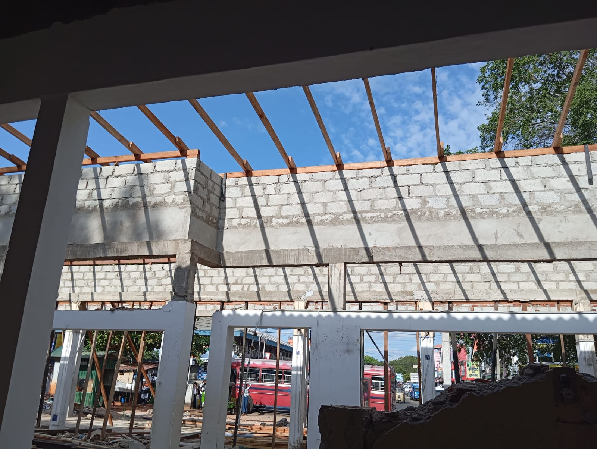

- 071 372 0667
- info@gauraconstruction.lk
Need a land survey before you build, buy land, or sort out a boundary problem? Gaura Construction arranges land, boundary, subdivision and condominium surveys carried out by Survey Department-licensed surveyors, so your plan is accepted for building permits, deeds and bank loans.


A proper land survey confirms your boundary, extent and access before design, permits or a bank loan can move forward.
Whether you're buying land, building a house, or dividing a property between family members, a land survey is usually the first practical step. Gaura Construction arranges the full process with Survey Department-licensed surveyors, so the survey, design and permit stages move together instead of holding each other up.
Confirms your land's exact boundary, extent and any encroachment issues - the most commonly requested type of land survey.
Site surveys that feed directly into house plans, building permit applications and foundation design.
Survey Department approved plans for dividing land into blocks, plus condominium and resurvey plans for updated deeds.
Our in-house team includes a graduate with a BSc (Hons) in Surveying Sciences, RICS-accredited, who checks the boundary data alongside our licensed surveying partners so the approved plan matches your project's design and permit process. Meet our engineering team.
Gaura Construction arranges land surveys for selected projects across Colombo, Gampaha, Kalutara, Kandy, Galle, Kurunegala, Ratnapura, Kegalle, and other districts in Sri Lanka, depending on project fit and scope.
Looking for a surveyor outside Colombo? Contact us with your land's location and what the survey is for, and we'll take it from there.
Talk to Gaura Construction about your land, boundary, subdivision or condominium survey needs, and we'll arrange a Survey Department-licensed surveyor and keep it moving alongside your design and construction schedule.